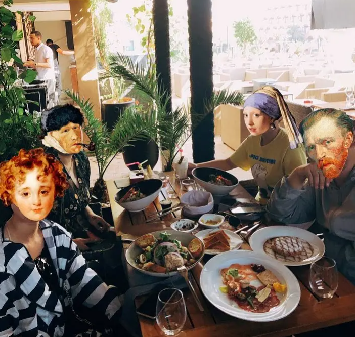
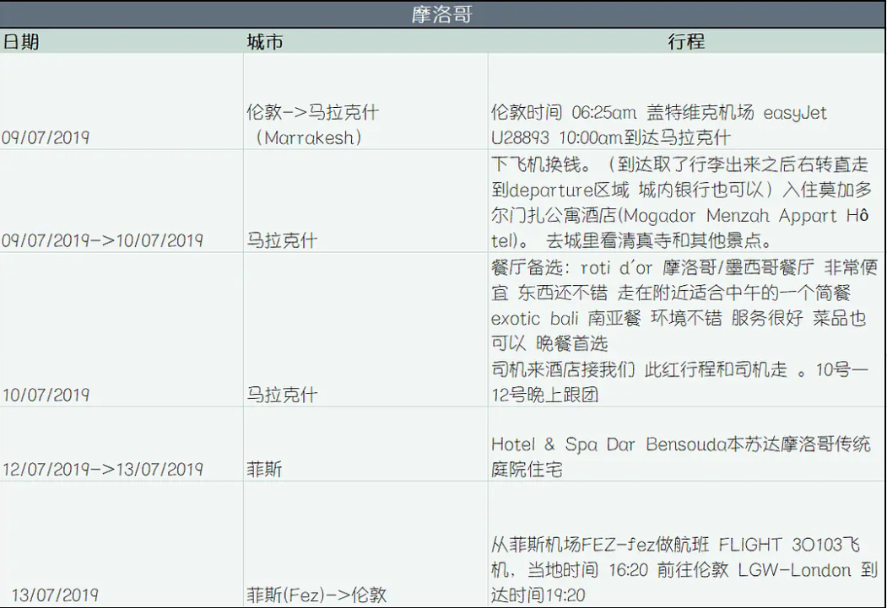
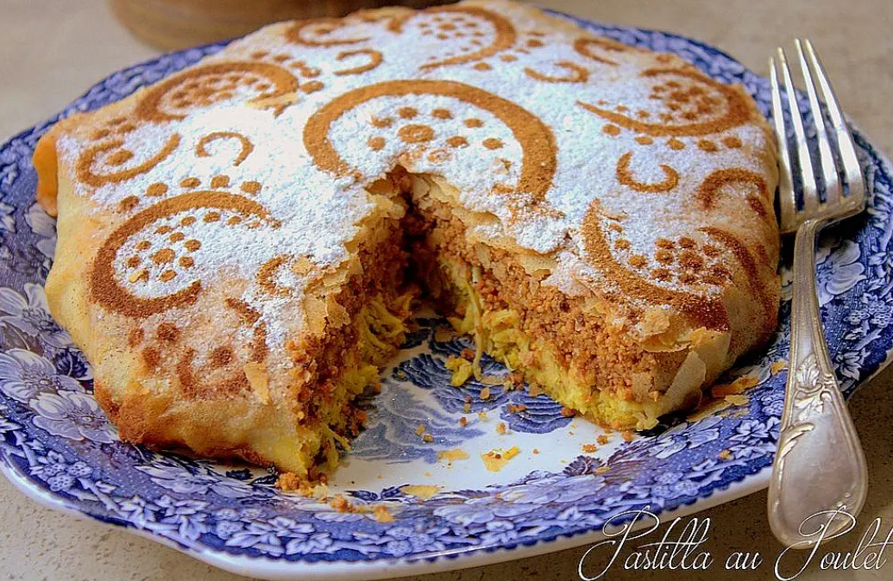
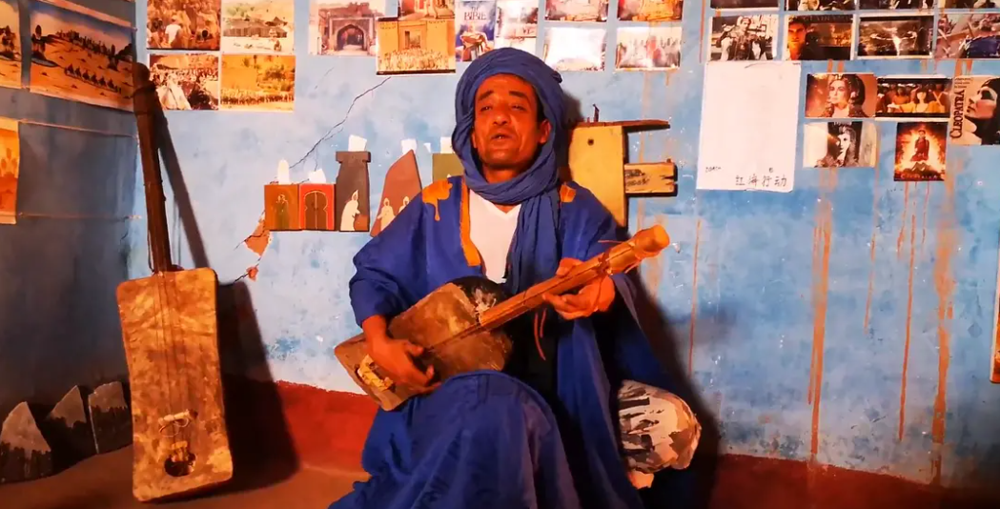
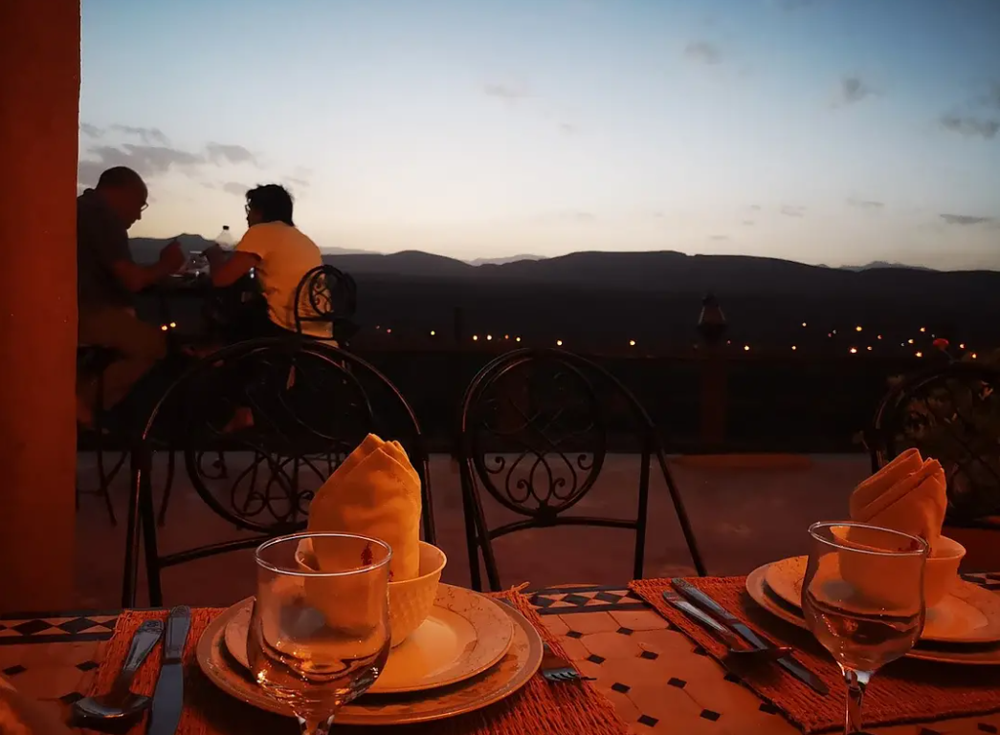
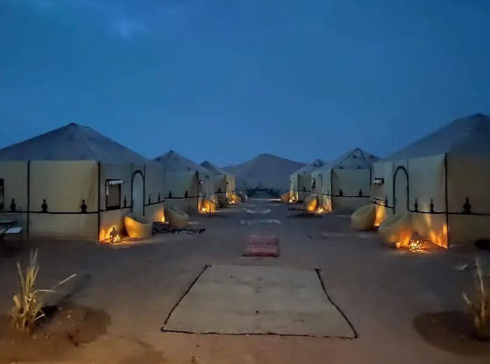
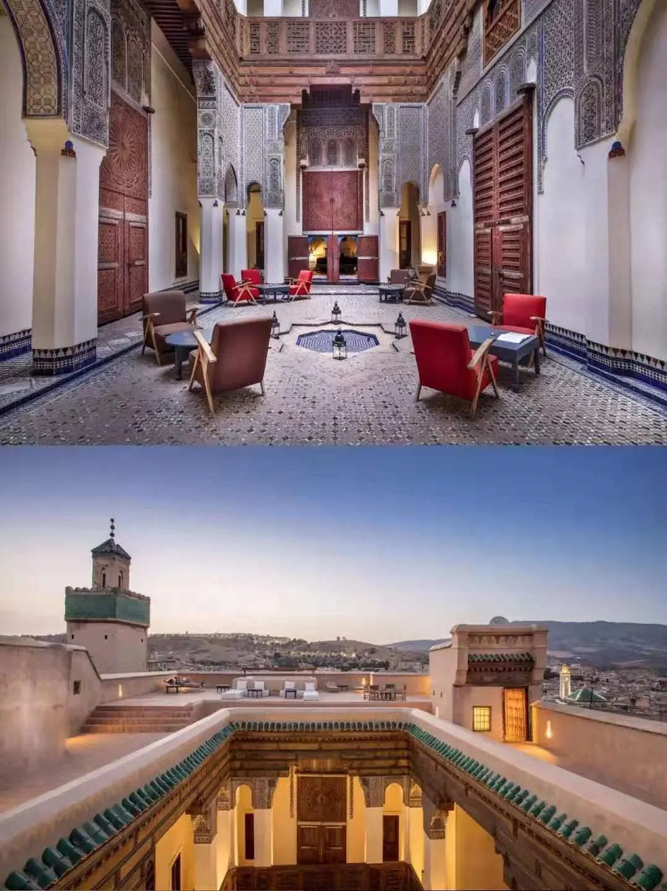

摩洛哥游记

摩洛哥真是一个说走就走的国家，临行前一天才查看攻略，加上自己经历，我也可以总结一份小攻略啦~在去之前，以为非洲的七月必定时烈日炎炎，去了才发现，热，但是没上海那么热！餐厅推荐拉到最下面。其他的都是絮絮叨。
大体行程如下图：

从伦敦飞到摩洛哥各个城市大约是3个小时，我们是提前十天买的机票，去马拉喀什的机票是一千小几，菲斯回来的机票是四百。旅行中遇到的中国游客说从中国坐飞机往返是六千，一趟20小时。
同伴先是在淘宝定了旅行社，两个晚上加司机包车和早晚饭钱一共是2400，司机小费最低一天100迪拉姆（约人民币70），在餐厅吃饭，酒店带路，提行李等一般要给一些小费（10~20 以下单位都是迪拉姆–dh）。然后我们多定了两个晚上的住宿。这一趟总体花费5000人民币。
从第一天开始说吧。当地人英语不好，主要说法语和当地语言。游客区的商家会说简单英。可以用谷歌地图，但肯定没有英国那么准确。刚下飞机，便经历了传说中的乱要价的的士。从机场到酒店要100？？？不可能，所以我们尝试走过去。谷歌地图有些路有点错误，也有好心的当地人指路，没有要钱。这里大多数酒店都有游泳池，所以如果带着泳衣来就会很开心啦。可以机场拿一个免费网络卡，然后向酒店寻求帮助，充值网费。5G我记得是5欧或者2.5欧，总之不贵。酒店也有wifi，但网速慢。在第一个酒店里我们做了马杀鸡，价格130半小时，做得昏昏欲睡~晚饭走了20分钟去了一个看起来很高档的餐厅，人均200在摩洛哥的消费已经很贵了，但我很喜欢其中一道菜–PASTILLA AU POULET，110dh。算当体特色，有点甜，同行的北方人不是很爱。

刚下飞机到第二天都是靠自己，第二天淘宝客服帮我们联系了司机，在我们自己定的酒店等我们，随后三天行程都是跟着司机跑。我们的找的是淘宝评论最好的，都夸这个司机人很好，会帮你赶跑不良商家，也不会逼你买东西，我们的体验感也是如此，所以最后给了司机500小费（司机每天100迪拉姆小费起，摩洛哥司机工资都很低，小费是他们收入的重要来源） 不管坐在车上什么位置路上都要记得系安全带，不然被警察查到要扣300迪拉姆的 。
和司机跑的路线，酒店走的时候花样姐姐里的摩洛哥路线和酒店，但我们只有三天所以只重合了一部分。贴一下旅行社行程
D1 08:30马拉喀什出发，阿伊特本哈杜村，阿特拉斯影城，瓦尔扎扎特城堡，宿达德峡谷附近；
D2 途径托德拉峡谷，到达梅尔祖卡，骆驼来接大家进入撒哈拉沙漠营地，宿沙漠帐篷酒店；
D3. 早起欣赏红沙日出，结束回营地早餐后送出到梅尔祖卡小镇，司机接上出发Aoufous绿洲、米德勒特午餐、伊芙兰小镇休息，下午5点左右到达菲斯，结束；
住宿餐饮安排
1、
① 峡谷酒店：TIZZOURINE，含晚餐早餐；
② 豪华帐篷：desert heart，含晚餐早餐；
2、骆驼接驳、篝火晚会、沙漠日出活动安排
沙漠团包两天早晚餐，午餐跟司机在路上吃，费用自理。路上经过 阿伊特本哈杜村 ，给了当地人100dh做导游费，参观了小城的风貌。你听过的很多电影都是在这里拍的，包括红海行动。我们在这里买了藏红花和蜜做的画，再用火烤出来。路上会遇到卖头巾的，如果这几天天气好，沙漠风沙不大的话也不一定要买，买的话也一定要讲价

第一天的峡谷酒店就是花样姐姐里美美的酒店啦，可以坐在峡谷上吃早点，进行晚餐，这里的塔吉锅也比路上的好吃一点。风景壮阔，住客也少。一到晚上，仿佛整个酒店都是我们的，游泳池，秋千，沙滩床，随便怎么玩。酒店还有小猫咪，很喜欢跟着人跑到屋子里，随便挠都不闹的。

花样姐姐里华晨宇扛着西瓜从市场到酒店，我绝对不相信！综艺里说五分钟，实际上我们走了20分钟，加上西瓜那么重你抗回来还能活蹦乱跳刷pose试试！肯定是剧组开车了一段路。上图就是酒店出门一直左转五分钟，再左转然后走十五分钟的路上风景啦，一直走下去就可以看到市场了。水果真是便宜又甜，我们买的西瓜和华晨宇抗得这个差不多，画了35dh，橘子是5dh/1kg，也忒便宜了。当地餐厅都有鲜榨橙汁，可以试试，真的很甜，一般15dh~20dh一杯。
接下来就是前往沙漠啦！我们的行李让负责人开车拖过去，我们则骑着骆驼走向沙漠（骆驼骑多了真是屁股痛），诀窍就是往后坐，身体后倾就可以稳住。
我们买的是最贵的套餐了，所以住的是豪华帐篷，连晚餐都吃出了米其林的风味（几碟子吃了仨小时）！但沙漠的这顿饭的确很值了，先给你薄荷茶，自己加上一块放糖就会变得很好喝，晚餐也终于不是塔吉锅，有特色春卷（我乱取的名字），水果，烤肉和很浓的布丁。

晚上还会有篝火晚会，和当地人一起唱歌击鼓。到十二点后，我们就从帐篷里偷了个毯子出来躺在沙丘上看星星，看到了天后座，天顶座……还有很多不确定名字的小星星。整个银河都在我们头顶，十分清晰，你瞪大眼盯着夜空中某一颗星看，还会感觉这颗星星仿佛在原地打转。我看着它，它也在看着我。七月我来到撒哈拉，我爱上这里每一粒沙，我在凌晨四点的夜里把手埋进沙子，感受它温暖的内在。沙子很细，握起一撮再放下，你会爱上这种感觉。把脚伸进沙丘，从感受夏夜凉风到体验被细沙包围的温暖。在沙丘上看着星星睡觉可以算得上我以后的人生成就吧。也是来到沙丘我才发现，比起大海我更喜欢这时候的沙漠，最宁静，最舒适。
离开沙漠的时候是坐越野车，沙漠越野车，一定要体验一次！真比过山车过瘾，保护好头部。司机开着车冲上沙丘的过程仿佛过山车慢慢爬向顶部，随着司机故作紧张的哼哼声，再突然开心的大喊一声冲下沙丘，整个人都飘起来喽。大家惊魂甫定还要爬第二个沙丘，是不是很有趣呢，感觉比骑骆驼好玩。
跟着司机的第三天主要是赶路，经过 摩洛哥“小瑞士”之称的伊芙汉，真的是几天之中看过最绿的地方啦，又开到一片猴林，动物都怪可爱的。直到六点到了我们在菲斯古城的酒店，司机帮我们联系了酒店的人来接我们，才离开。说起摩洛哥最深的印象出来沙漠，就是酒店都太好啦，让我回家后都不能接受自己狭窄的房间。整个行程比较松散，酒店又如此美丽，物价又如此便宜，还能让你体验讨价还价的快感，真真切切感受到了什么事度假。看看这个恢弘的酒店吧，难以想象在菲斯古城里还有这么美得酒店，每个房间都很大，我甚至可以再浴室跳舞了。无意中溜到楼顶发现别有洞天，在这里俯视酒店全貌，远眺古城风光。酒店介绍都在图一了。
之前有很多朋友被司机追求又或者遇上的全是坏心眼当地人，这里我们也遇上过意图不轨的当地人，一般在古城里游手好闲的年轻人会给你指错路，或者直接搭讪你骗你（一句都不要信） 。所有说这条路不能走的都不要听，大家抱团走不要散。做生意都是挺好的人，出门拿着手机和酒店地图，存好酒店电话，有问题打电话。我们顺着谷歌地图找到一家四川菜馆，大众点评上就有，好评很高。同伴凭借高超的模仿能力假称自己是成都人和老板套近乎，搞得老板好高兴，又唠嗑又把自己晚餐拿来给我们品品。老板说自己是两年前来的，当时听说这里没中餐馆就来了，现在城里又开了个东北菜，果然能和四川菜抗衡的只有东北菜！人均50rmb，用的微信转账，靠近四川菜馆有很多当地小孩喜欢凑热闹围着我们，不要管他们就好了。靠近菜馆会有“川菜”两个字写在墙上，看到就放心了。
白天去古城购物街逛了逛，也是顺着谷歌地图走的。不要理路人指路，都是指反方向。购物街东西十分便宜，还可以再砍价，但由于老板开价过于便宜以至于我们没好意思大砍价，意思意思的了。真皮包很便宜，加上砍价，一个女生的斜挎包也不过100dh，像是白捡的一样。
最后我们很满意的餐厅呢就是一开始说的那个高档餐厅，还有这个川菜锦官城川菜馆 ，真是我在国外吃过最正的川菜了。同行的大姐已经老泪纵横了。附上大众点评：

马拉喀什这家西餐找到了tripadvisor的点评，可以看看照片： https://www.tripadvisor.co.uk/Restaurant_Review-g293734-d7046207-Reviews-Arkech-Marrakech_Marrakech_Tensift_El_Haouz_Region.html